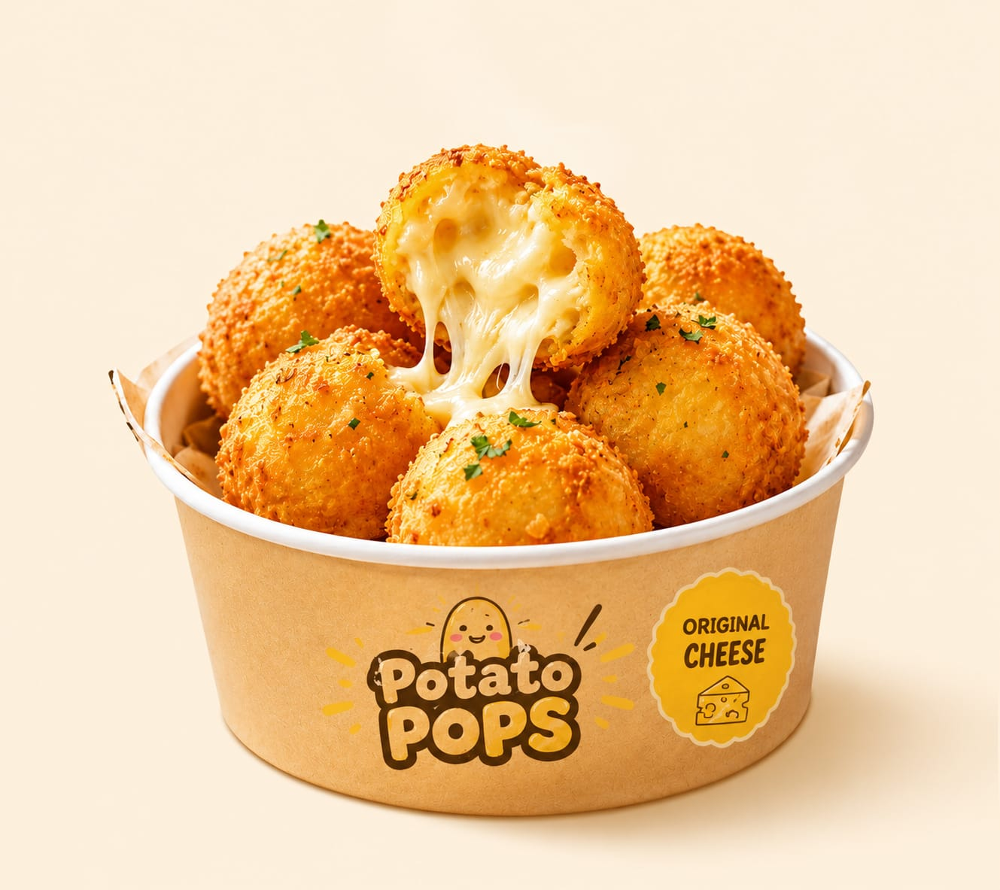
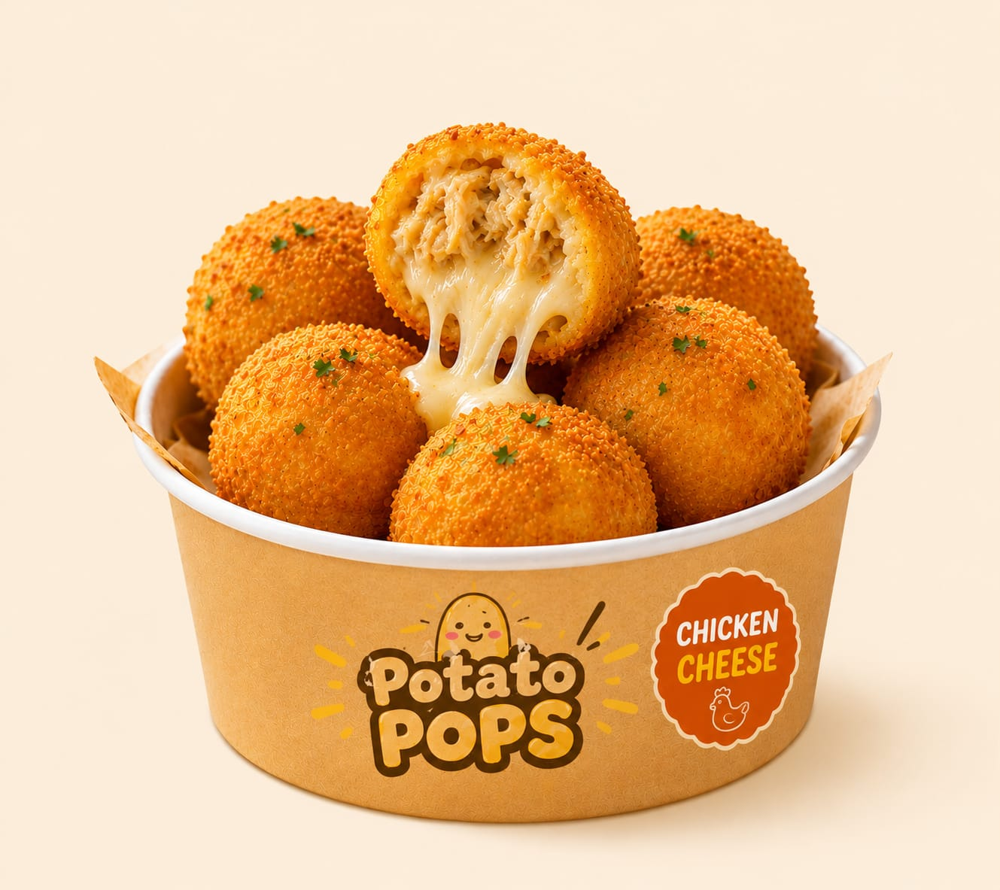
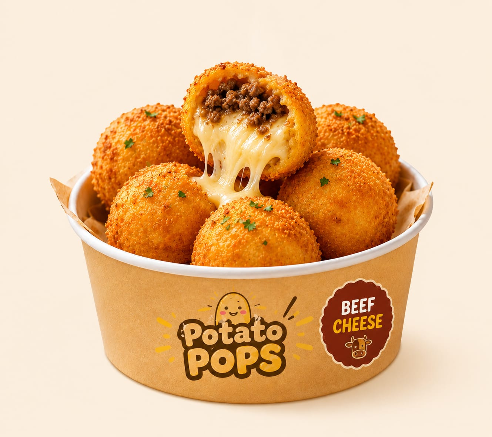

Potato Pops hadir sebagai camilan kentang kekinian yang memadukan tekstur crispy di luar dengan isian yang lumer di dalam. Dibuat dari kentang pilihan dan bahan berkualitas, Potato Pops menawarkan pengalaman ngemil yang lezat, praktis, dan ramah di kantong. Dengan berbagai varian rasa seperti Original Cheese, Chicken Cheese, dan Beef Cheese, kami siap menemani setiap momen santai, belajar, maupun nongkrong bersama teman.


Visi: Menjadi camilan terbaik.
Misi: Menjaga kualitas dan rasa.